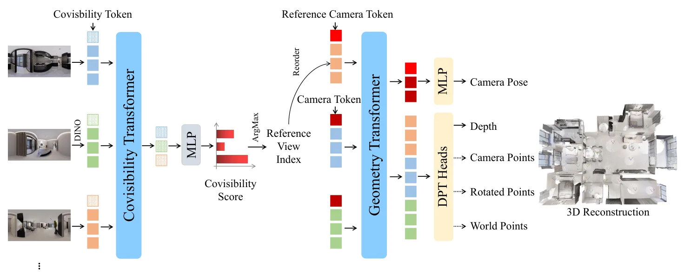
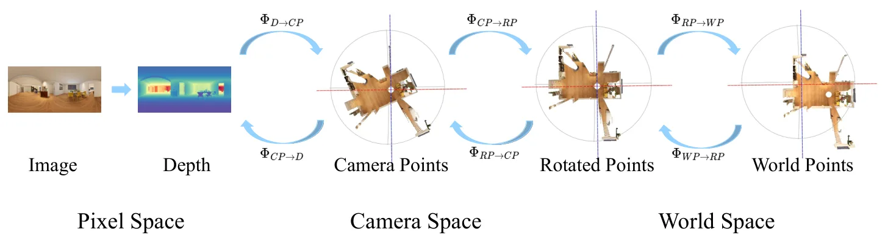
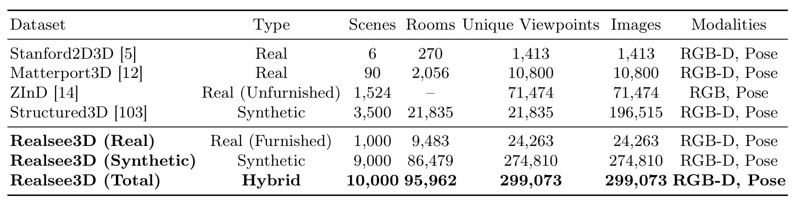

Argus：室内场景的度量全景 3D 重建Argus: Metric Panoramic 3D Reconstruction for Indoor Scenes
贴合室内三维重建、度量尺度、相机位姿估计和点云重建；对 SLAM 初始化/重定位有潜在参考。
一句话工作总结
Argus 通过大规模全景 RGB-D 数据和 covisibility 锚点选择，把全景重建推向可评测的度量相机位姿、深度和点云输出。
摘要
全景 feed-forward 3D 重建长期缺少大规模 RGB-D 训练数据和可靠 metric supervision。该文提出 Realsee3D：包含 10K 室内场景、299K panoramic viewpoints 和精确度量标注的混合数据集；并提出 Argus 网络进行 metric panoramic 3D reconstruction。在 Realsee3D 的稀疏无序采集设置下，坐标锚选择不佳会造成全局位姿漂移，因此 Argus 设计 learned covisibility module 自动选择几何最优参考视图锚定世界坐标。它还将双向 pixel-to-world mapping 拆成可解释子步骤，并用逐步监督和跨坐标约束提升几何一致性。
Metric feed-forward 3D reconstruction for panoramic data remains under-explored due to the lack of large-scale panoramic RGB-D training data. We present Realsee3D, a hybrid dataset of 10K indoor scenes (1K real, 9K synthetic) with 299K panoramic viewpoints and precise metric annotations, and Argus, a feed-forward network trained on it for metric panoramic 3D reconstruction. In the sparse unordered capture setting of Realsee3D, a poorly chosen coordinate anchor can cause global pose drift. Argus addresses this with a learned covisibility module that selects the geometrically optimal reference view to anchor the metric world frame. To further improve multi-task learning, we decompose the bidirectional pixel-to-world mapping into interpretable sub-steps with per-step supervision and cross-coordinate joint constraints, reinforcing geometric consistency across prediction branches. On the Realsee3D benchmark, Argus achieves state-of-the-art metric performance in camera pose estimation, depth estimation, and point cloud reconstruction. Project page: https://argus-paper.realsee.ai.
中文解读摘录
- 为什么看：补齐了全景 feed-forward 重建中“度量尺度”和“大规模 RGB-D 训练数据”不足的问题，并给出 Realsee3D 数据集。
- 方法要点：Realsee3D 包含 10K 室内场景、299K panoramic viewpoints 和精确 metric annotations；Argus 用 learned covisibility module 选择最优参考视图锚定世界坐标，减少 unordered sparse capture 下的全局位姿漂移。
- 结果信号：在 Realsee3D benchmark 上，camera pose estimation、depth estimation 和 point cloud reconstruction 均达到 SOTA。
- 跟踪建议：重点评估数据是否开放、坐标锚选择是否能迁移到 SLAM 初始化/重定位，以及对稀疏无序全景采集的鲁棒性。
- 链接：abs · PDF · 项目页：https://argus-paper.realsee.ai
图表/页面预览

{kind=link}

{kind=link}

{kind=link}
